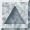

Navigation:
Up,
Table of Contents,
Bibliography,
Index,
Title Page
Definition
A facet optionally stores a reference to an incident
halfedge that points to the facet. Type tags indicate whether this
member function is supported. Figure

depicts the relationship between a halfedge and its incident halfedges,
vertices, and facets.
Creation
Operations
|
void*
|
f.halfedge ()
|
an incident halfedge pointing to f.
|
|
const void*
|
f.halfedge () const
|
|
void
|
f.set_halfedge ( void* h)
|
Types for Tagging Optional Features
The nested type below is either equal to CGAL_Tag_true or
CGAL_Tag_false, depending on whether the named member function
is supported or not.
Next: Class declaration of CGAL_Halfedge_data_structure_decorator<HDS>
Navigation:
Up,
Table of Contents,
Bibliography,
Index,
Title Page
The CGAL Project. Tue, April 21, 1998.